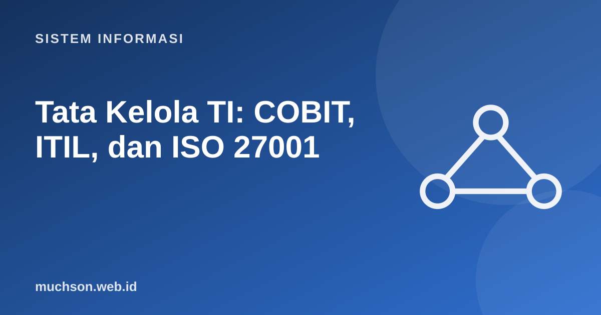

Beranda › Artikel › Sistem Informasi
Sistem InformasiTata Kelola TI: COBIT, ITIL, dan ISO 27001
Setelah organisasi memiliki banyak sistem informasi, muncul pertanyaan baru: apakah investasi TI benar-benar mendukung tujuan bisnis, apakah risikonya terkendali, dan apakah layanannya andal? Tata kelola TI menjawabnya dengan kerangka kerja dan standar yang telah teruji.
Sebaiknya sudah paham: konsep SI, keamanan informasi

Setelah membaca dan mencoba materi ini, Anda mampu:
- membedakan tata kelola (governance) dan manajemen TI
- menjelaskan tujuan dan struktur COBIT
- menjelaskan siklus layanan ITIL dan konsep incident, problem, change
- menjelaskan ISO/IEC 27001 dan siklus PDCA pada ISMS
- memilih kerangka yang sesuai dan memahami cara memadukannya
Governance dan management
COBIT: apa yang perlu dikendalikan
COBIT (Control Objectives for Information and Related Technologies) dari ISACA adalah kerangka tata kelola dan manajemen TI perusahaan. Ia menyediakan sekumpulan tujuan tata kelola dan manajemen yang dikelompokkan dalam domain, beserta panduan tingkat kapabilitas proses.
| Domain COBIT 2019 | Fokus | Contoh tujuan |
|---|---|---|
| EDM: Evaluate, Direct and Monitor | Tata kelola | Memastikan realisasi manfaat, optimasi risiko |
| APO: Align, Plan and Organize | Perencanaan dan organisasi | Strategi TI, arsitektur, manajemen risiko, anggaran |
| BAI: Build, Acquire and Implement | Pembangunan dan perubahan | Pengelolaan proyek, kebutuhan, perubahan |
| DSS: Deliver, Service and Support | Operasi dan layanan | Insiden, masalah, keamanan operasional |
| MEA: Monitor, Evaluate and Assess | Pemantauan | Kinerja, kepatuhan, jaminan |
COBIT menjawab "apa" yang perlu dikelola dan diukur, bukan "bagaimana" mengerjakannya secara rinci. Untuk caranya, organisasi memadukan dengan ITIL, ISO 27001, atau praktik lain.
ITIL: mengelola layanan TI
ITIL (Information Technology Infrastructure Library) mengumpulkan praktik terbaik untuk manajemen layanan TI. Versi 4 (2019) memandang layanan sebagai sistem nilai (service value system) yang menciptakan nilai bersama pelanggan.
| Praktik | Pertanyaan | Contoh |
|---|---|---|
| Incident management | Bagaimana memulihkan layanan secepatnya? | Server email mati: pulihkan dulu, cari sebab kemudian |
| Problem management | Apa akar penyebab insiden berulang? | Analisis mengapa disk penuh tiap Senin |
| Change enablement | Bagaimana perubahan dilakukan tanpa merusak layanan? | Persetujuan dan jadwal untuk pembaruan basis data |
| Service request management | Bagaimana melayani permintaan rutin? | Pembuatan akun baru, permintaan perangkat |
| Service desk | Titik kontak tunggal bagi pengguna | Helpdesk dengan sistem tiket |
ISO/IEC 27001: sistem manajemen keamanan informasi
ISO/IEC 27001 menetapkan persyaratan ISMS (Information Security Management System). Organisasi dapat disertifikasi oleh badan sertifikasi independen. Intinya adalah manajemen risiko: mengidentifikasi aset dan ancaman, memilih kontrol, lalu memperbaiki terus menerus lewat siklus PDCA.
| Aspek | COBIT | ITIL | ISO 27001 |
|---|---|---|---|
| Fokus | Tata kelola dan manajemen TI menyeluruh | Manajemen layanan TI | Keamanan informasi |
| Pertanyaan utama | Apakah TI menciptakan nilai dan risikonya terkendali? | Apakah layanan andal dan terus membaik? | Apakah informasi terlindungi (CIA)? |
| Sertifikasi organisasi | Tidak (ada sertifikasi individu) | Standar terkait: ISO/IEC 20000 | Ya, ISO/IEC 27001 |
| Pengguna khas | Dewan, auditor, CIO | Operasi TI, helpdesk | CISO, tim keamanan, kepatuhan |
Memadukan dan menyesuaikan
- Mulai dari tujuan bisnis, bukan dari kerangka. Kerangka adalah alat.
- Pilih bagian yang relevan; jangan mengadopsi semuanya sekaligus (perusahaan kecil tidak butuh seluruh proses COBIT).
- Gunakan COBIT untuk peta tata kelola, ITIL untuk operasi layanan, ISO 27001 untuk keamanan; tumpang tindih wajar.
- Ukur dan tinjau: kerangka tanpa metrik hanya menjadi dokumen.
- Di Indonesia, instansi pemerintah juga mengacu pada regulasi seperti SPBE (Perpres 95/2018) dan ketentuan sektor (OJK, BI).
1. Server kampus mati dan layanan KRS terhenti. Mana tindakan incident management, mana problem management?
2. Mengapa perubahan produksi memerlukan change enablement?
3. Tuliskan satu pertanyaan tata kelola dan satu pertanyaan manajemen.
4. Mengapa siklus PDCA penting dalam ISMS?
- Governance mengarahkan dan memantau; management melaksanakan.
- COBIT: apa yang dikendalikan; ITIL: bagaimana layanan dikelola; ISO 27001: bagaimana keamanan dikelola dan disertifikasi.
- Incident memulihkan, problem mencegah berulang, change menjaga stabilitas.
- Adaptasi kerangka sesuai ukuran dan tujuan organisasi.
Tanya jawab
Apakah ITIL dan COBIT bersaing?
Apa itu SPBE?
Apakah UMKM perlu sertifikasi ISO 27001?
Referensi
- ISACA: COBIT
- ISO/IEC 27001: Information security management systems
- AXELOS/PeopleCert: ITIL 4
- Weill dan Ross, IT Governance (Harvard Business School Press, 2004)